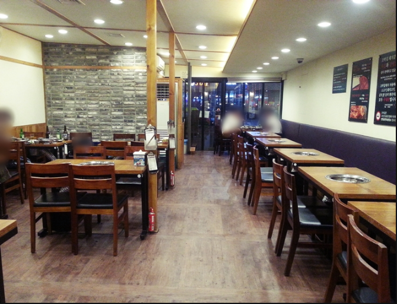
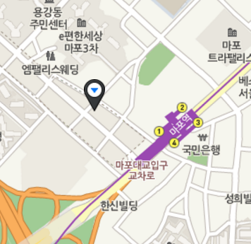

조박집
1. 위치 및 소개
위치:  소개:- 마포역 인근에 위치하여 찾아가기 편합니다.
- 수요미식회에 소개되기도 한 마포의 돼지갈비 강자중 한곳입니다.
- 별관이 있어서 자리 걱정을 하지 않아도 됍니다.
- 김치, 쌀, 돼지고기, 소고기. 등 대부분의 재료를 국내산을 사용합니다.
- 식중에 동치미와 식후에 식혜가 제공되어 산뜻하게 식사를 할 수 있습니다.
- 돼지갈비의 양념이 강하지않아서 적절한 양념과 고기 본연의 맛을 즐길수 있는 곳입니다.
전화번호: 02-712-7462 영업시간: 11:30 - 23:00 break time: 15:00 - 17:00
2. 메뉴
| 추천 메뉴 | |||||
|---|---|---|---|---|---|
| 이름 | 돼지 갈비(250g) | 한우 주물럭(200g) | 포장 식혜 | ||
| 가격 | 14,000won | 39,000won | 6,000won | ||
어! 이게 뭐지?
3. 식당평가
조박집은 마포에 자리잡은 돼지갈비집 강자중 하나입니다. 마포는 옛날부터 돼지갈비가 유명해서 거기서 살아남은것만으로도 맛집이라는것을 증명할수있습니다.이곳의 장점은 바로 달지않은 양념의 적절한 고기와의 조화입니다.
식중에 동치미국수를 제공해주는데 고기를 먹다가 느끼해주면 산뜻하게 느끼함을 풀어줄수있습니다. 또한 식후에는 식혜를 주는데 뒷마무리를 깔끔하게 해주는 역할을 합니다.
하지만 가격대가 높고 맛 또한 달달한맛을 좋아하는 젊은층보다는 적당한 달콤함과 고기 본연의 맛을 좋아할 중년층에게 알맞은것같아 나중에 좀 더 나이가 들면 자주가고 싶은 곳입니다. 한마디 평가: 인생 돼지갈비집
4. 평점
★★★★☆

(주) FOOD PARTNER 대표이사 김현석 서울특별시 강서구 허준로 176 (가양동, 8단지)
전화 010-5292-7308
E-mail : kjuk02@naver.com
사업자등록번호 2014-30-50 음식판매업 신고 제2014-국민소형-3050호 사업자정보확인
copyright (C) FP inc. All rights reserved.